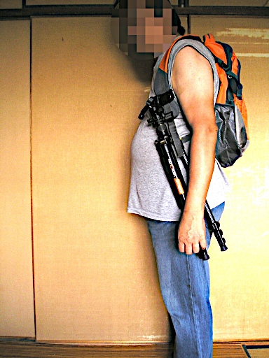

2018 年
10 月 14日 ( 日 )
三脚の携帯方法
9 日の日に万博記念公園にリベンジ撮影に行ってきた話は過去記事に書きました。そのときに思いついたことの話を書きます。
私は通常ザックに三脚を突っ込んでしまっていて必要になったらザックを降ろして三脚を取り出していたのですが、10m おき 20m おきに被写体を見つけたりすると、ザックをいちいち降ろして三脚を取り出すのが煩雑で面倒なわけです。
それで 9 日の日に思いついたのが下の写真の方法です。

三脚の脚の 1 本をザックのショルダーハーネスに肩と一緒に通してやれば、三脚が必要になったときには三脚をショルダーハーネスから抜くだけで済むではないかと。しかもこの方法だと三脚を運ぶときにも邪魔になりませんし三脚が暴れることもないので人にぶつける心配もありません。
これはいい方法を思いついたなと思ったのですが一つ問題がありました。
私はキャプチャのコピー製品をザックのショルダーハーネスに取り付けてカメラをそこに固定しています。なのでショルダーハーネスに差し込んだ三脚とキャプチャに取り付けたカメラが干渉してガチャガチャとぶつかるんですね。
カメラは精密機器ですこれは良くないなぁ、なんらかの改善が必要だなと思って用意したのが下のパラコードです。ながさはたすき掛けにして肩から腰くらいまでの長さがあります。

このパラコードをたすき掛けにしてやって下の写真のように、このパラコードに三脚の脚のうちの 1 本を差し込んでやれば干渉問題は解決ではないかと。

自宅で試した分には問題はありませんでした。今度の 3 度目の万博記念公園リベンジで試してきます。その結果はここに追記しますので乞うご期待。
- Category :
- 日記
- カメラ
- 写真
- 三脚